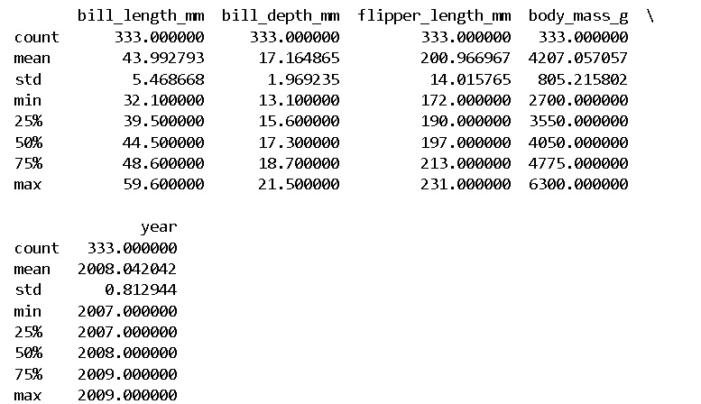
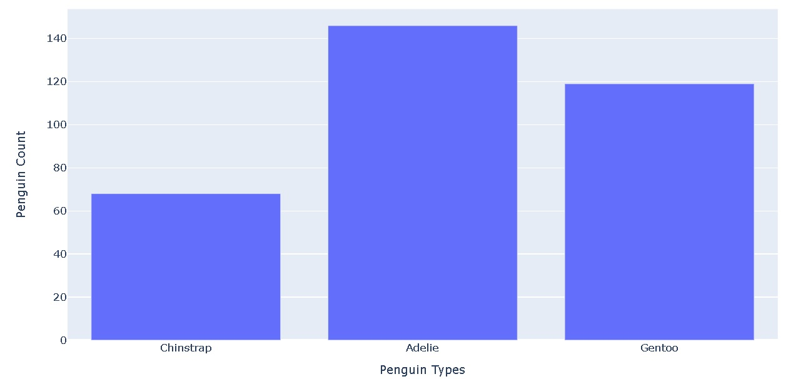
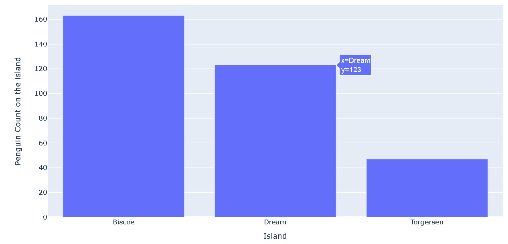
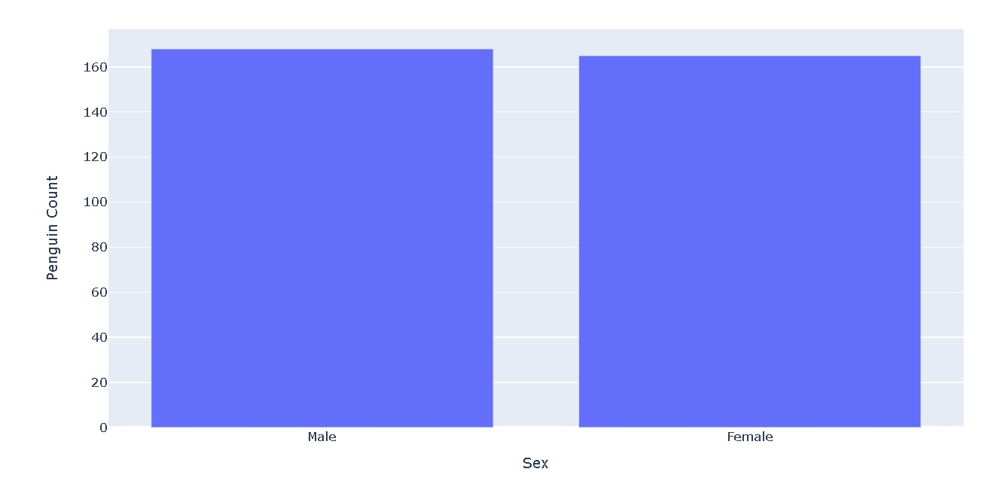
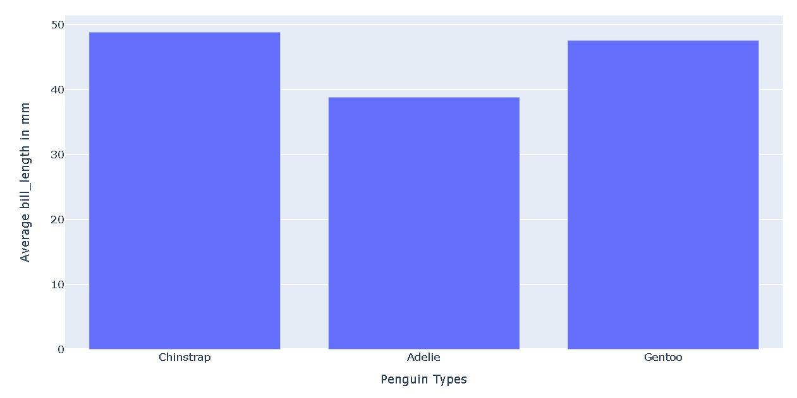
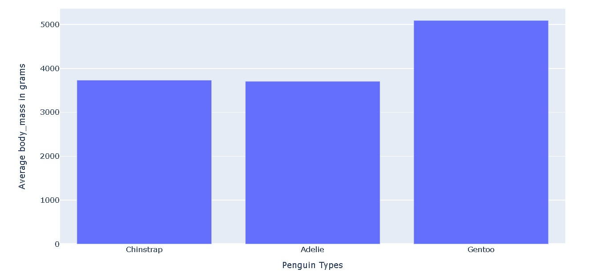
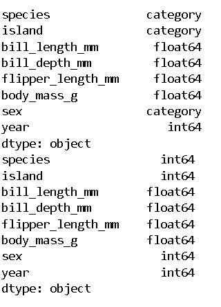
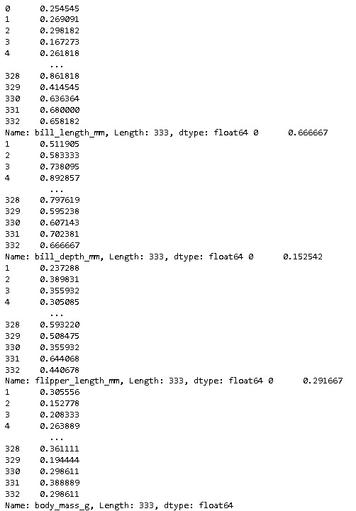
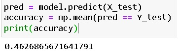
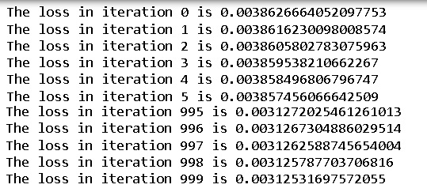

Importing Necessary Libraries and Reading the Dataset
In this section, we will import the essential libraries for our project while adhering to the restriction of not using pre-built functions like those found in scikit-learn. Additionally, we will read the dataset to prepare for further analysis and implementation.
In order to conduct a comprehensive analysis, we have imported several fundamental libraries in our project. These include NumPy for numerical computations, Pandas for data manipulation, Matplotlib and Seaborn for data visualization, and Plotly for interactive visualizations. Additionally, we have utilized Plotly Express and Plotly Graph Objects to create advanced interactive plots. To enhance the versatility of our visualizations, we have employed Plotly's subplots functionality.
Furthermore, we have loaded our dataset, named 'penguins.csv', using Pandas to facilitate a detailed examination of its contents. This initial step is pivotal in understanding the underlying structure and characteristics of the data we will be working with.
The dataset comprises the following columns:
- species
- island
- bill_length_mm
- bill_depth_mm
- flipper_length_mm
- body_mass_g
- sex
- year
Data Preprocessing: Removing Null Values and Analyzing Dataset Statistics
The missing values were removed from the dataset to ensure data integrity and accuracy in our analysis. The cleaned dataset was generated by removing all rows containing null values in any of the columns. After this preprocessing step, key statistical summaries were printed to gain insights into the data distribution and characteristics. The main statistics of the preprocessed dataset were calculated using the describe() function. This function provides essential statistics such as mean, standard deviation, minimum, maximum, and quartile values for numerical columns. By examining these statistics, we can understand the central tendencies and variability of the numerical features in the dataset.
Visualizations
Penguin Species Distribution
In this section, we are visualizing the distribution of penguin species after removing null values from the dataset. The data has been categorized into three species: 'Chinstrap', 'Adelie', and 'Gentoo'. Using a Plotly bar chart, we represent the count of each penguin species. The x-axis represents the different penguin types (Chinstrap, Adelie, Gentoo), while the y-axis shows the corresponding count of penguins for each species. This visualization provides a clear and concise overview of the distribution of penguin species in the preprocessed dataset. The count of Adelie is maximum in the dataset.
Penguin Count on Different Islands
In this visualization, penguin counts on three different islands - Biscoe, Dream, and Torgersen - are represented using a bar chart. The chart offers a clear comparison of penguin populations on these islands, aiding in the visual understanding of the distribution of penguins across different habitats. The island Biscoe has the largest number of penguins residing in it.
Gender Distribution
In this section, the dataset is analyzed to understand the distribution of penguins based on their gender. Using Plotly Express, a bar chart is created to visually represent the counts, with the x-axis denoting gender ("Male" and "Female") and the y-axis indicating the corresponding penguin count. This visualization provides a clear and concise overview of the gender distribution among the penguins in the dataset. We can see that the number of male penguins is more than the number of demale penguins from the dataset.
Average Bill Length Across Penguin Species
In this analysis, the average bill length in millimeters for three distinct penguin species—Chinstrap, Adelie, and Gentoo—was calculated and visualized. The data revealed the average bill length for each species, allowing for a clear comparison. The x-axis denotes the types of penguins (Chinstrap, Adelie, and Gentoo), while the y-axis represents the average bill length in millimeters. This visualization provides valuable insights into the variations in bill length among these specific penguin species. We can see that the Chinstrap penguins are comparatively longer than the other two species of penguins.
Penguin Body Mass by Species
In this analysis, the dataset has been examined based on the different penguin species: Chinstrap, Adelie, and Gentoo. The calculated average body mass values for each species were plotted on the y-axis, while the x-axis represents the different penguin types: Chinstrap, Adelie, and Gentoo. We can see that the Gentoo penguins are the heaviest among all.
Data Transformation: Converting String Features to Categorical and Numeric Values
In this section, the dataset's string-based features, namely "species," "island," and "sex," have been transformed to categorical data types to enhance computational efficiency. Initially, these string features were converted to categorical variables using appropriate data types. Subsequently, the categorical values were further converted into numeric representations. This transformation is a crucial step in preparing the data for machine learning algorithms, as it enables numerical computation while retaining the essential categorical distinctions within the dataset.

Feature Normalization: Scaling Non-Categorical Attributes
In this step, non-categorical features, including 'bill_length_mm', 'bill_depth_mm', 'flipper_length_mm', and 'body_mass_g', have been normalized. Normalization is a crucial preprocessing technique that scales numerical attributes to a standard range, typically between 0 and 1. This process ensures that all features contribute equally to the analysis and prevents any particular feature from dominating due to its larger magnitude. The normalized values of these features have been calculated and updated in the dataset for further analysis and modeling.
Data Preparation: Creating Input and Target Matrices, and Train-Test Split
In this step, the dataset has been divided into input features (X) and the target variable (Y). The target variable, denoted as 'Y_target', represents the 'sex' column, while the input features, represented by 'X_data', consist of all columns except 'sex', 'year', and 'island'. The shape of the target variable (Y) is (333,), indicating 333 data samples, and the shape of the input features (X) is (333, 5), signifying 333 samples and 5 features.
Furthermore, the dataset has been split into training and testing sets using an 80-20 split ratio. 80% of the data has been allocated for training, and 20% for testing. After the split, the shapes of the training and testing sets are as follows:
X_train: (266, 5) - representing 266 samples and 5 features for training.
Y_train: (266,) - representing 266 target values for training.
X_test: (67, 5) - representing 67 samples and 5 features for testing.
Y_test: (67,) - representing 67 target values for testing.
Logistic Regression Model Implementation and Evaluation
A logistic regression model has been defined from the scratch and trained. The model, encapsulated within the LogitRegression class, is initialized with specified hyperparameters: a learning rate of 0.001 and 1000 iterations for training.The model's weights are initialized with random values within the range [0, 1].
During the training process, the model utilizes the sigmoid function to calculate predictions based on input features. Gradient descent is employed to iteratively adjust the model's weights and bias, minimizing the loss function. The loss values are recorded for each iteration, providing insights into the model's learning progress.
After training, the model is applied to the test dataset. Predictions are made and compared with the actual values to calculate accuracy. The accuracy, representing the proportion of correct predictions, is then printed. The model's accuracy on the test dataset is approximately 46.27%, indicating that it did not fit well with the data. This low accuracy suggests that the model's predictive capabilities are limited, highlighting the need for further analysis, feature engineering, or potentially exploring more complex algorithms to achieve a better fit with the given data.
Additionally, the loss values at each iteration are printed. These values demonstrate how the model's performance improves over successive iterations, providing a visual representation of the optimization process. The loss values demonstrate the optimization process. The loss was 0.0038626664052097753 at the start of training (iteration 0) and decreased to 0.00312531697572055 by the end of training (iteration 999). Although there was a reduction in loss, the model's performance remained suboptimal, reflecting the challenges encountered in capturing the underlying patterns within the dataset.
